小米手环 10
小米手环 9 Pro
拾分钟 v1.1.0
已适配小米手环 10
拾分钟是一款为小米手环打造的实用专注工具。普通计时、番茄钟、多样化的样式定制、丰富的背景图片——让你的每一次专注都舒适自在。无需复杂操作，打开即用，人性化体验。
应用下载
RPK 安装包 · Band 10 版
界面预览
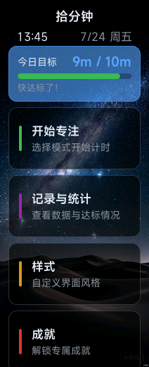
主页面
今日目标与快捷入口
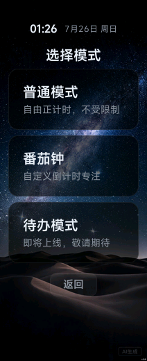
模式选择
普通/番茄钟模式
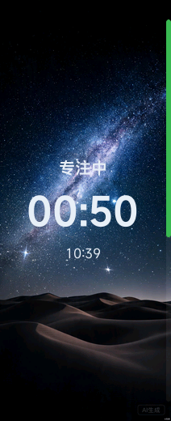
专注计时
倒计时专注进行中
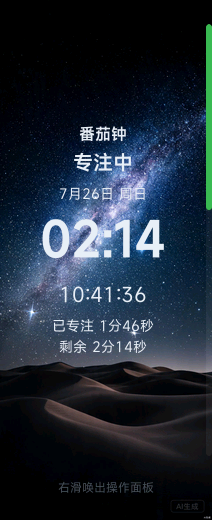
控制面板
暂停与结束操作
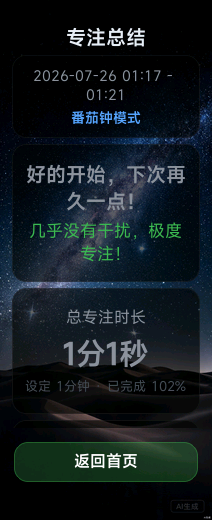
专注总结
完成评价与数据
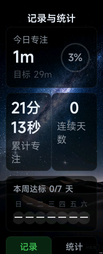
本周记录
每日达标一览
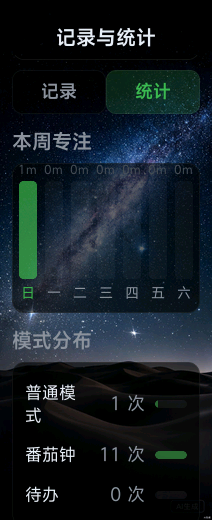
专注统计
数据趋势分析
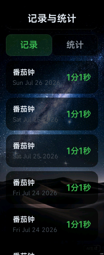
专注记录
历史记录查看
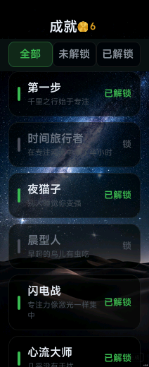
成就系统
25个成就等你解锁
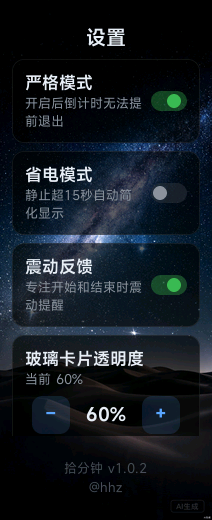
设置
专注偏好与开关
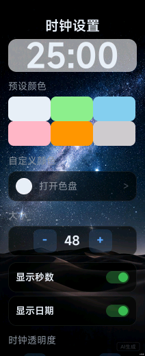
时钟设置
颜色与大小定制
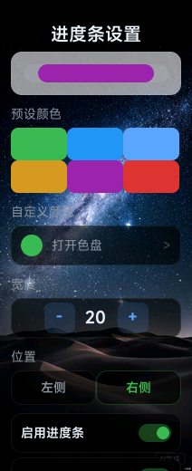
进度条设置
颜色与位置调整
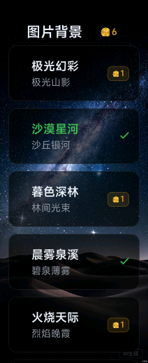
背景商店
专注币购买新背景
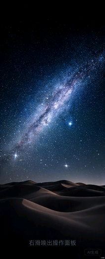
背景选择
丰富图片自由切换
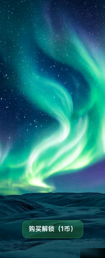
极光幻彩
20张精美背景
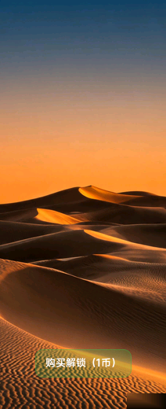
沙漠星河
沉浸式专注体验
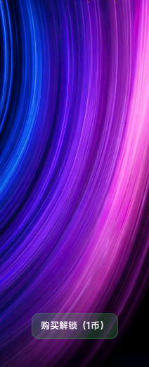
流光轨迹
科技感动态风格
海面日出
治愈系自然风光
功能亮点
番茄钟模式
自定义专注/休息时间，自动轮换。净专注算法检测真实运动状态，划水会自动减速计时。
专注统计
自动记录每一次专注，日/周/累计数据一目了然。
普通专注
自由正计时，无时长限制。支持暂停和结束总结。
成就系统
25个成就等你解锁
样式定制
时钟/背景/进度条
净专注算法
运动检测防划水
省电模式
静止简化显示
拾分钟 v1.0.2
小米手环专属效率工具
拾分钟是一款运行在小米手环上的专注效率工具。支持普通专注计时与番茄钟工作法，帮你充分利用每一分钟。
界面预览
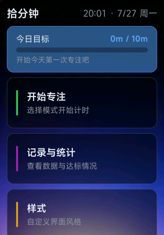
主页面
今日目标与快捷入口
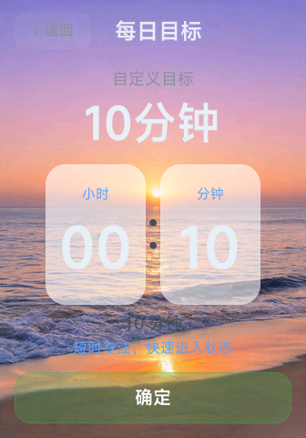
每日目标
目标进度一目了然
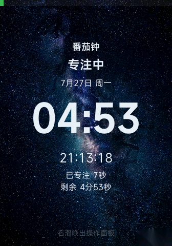
专注页面
默认专注视图
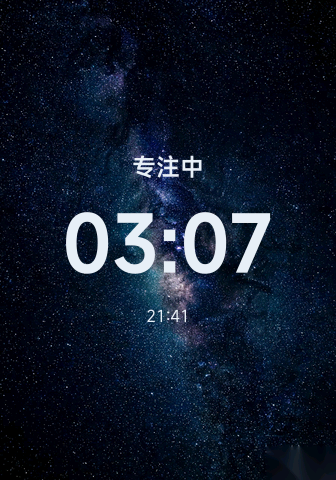
专注精简
省电精简模式
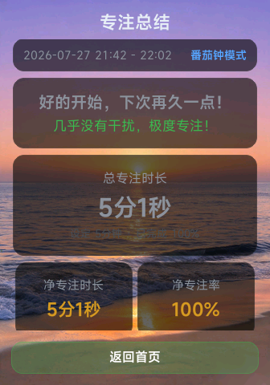
专注总结
完成评价与数据
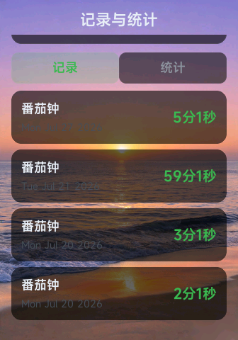
专注记录
历史记录查看
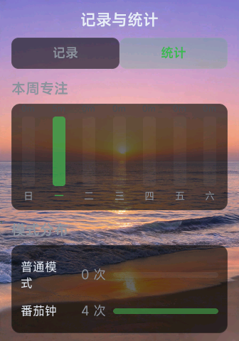
专注统计
数据趋势分析
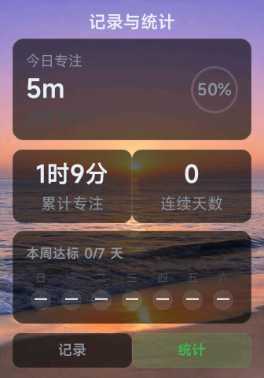
记录与统计
本周达标一览
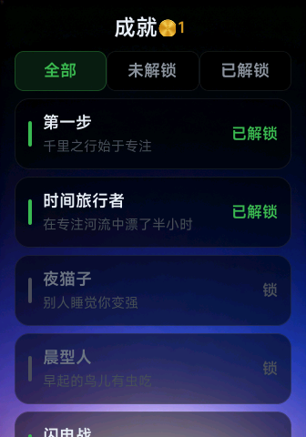
成就系统
25个成就等你解锁
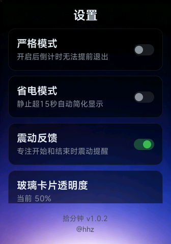
设置
专注偏好与开关
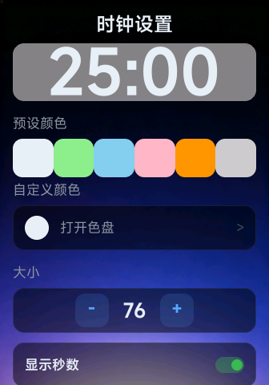
时钟设置
颜色与大小定制
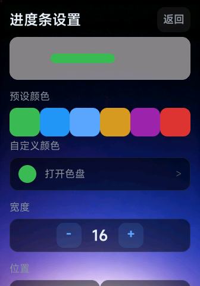
进度条设置
颜色与位置调整
专注样式
暮色森林主题
灯塔背景
沉浸式专注体验
枫叶背景
自然风格背景
日落海滩
治愈系自然风光
森林背景
丰富背景自由切换
功能亮点
番茄钟模式
自定义专注/休息时间，自动轮换。净专注算法检测真实运动状态。
专注统计
自动记录每一次专注，日/周/累计数据一目了然。
普通专注
自由正计时，无时长限制。支持暂停和结束总结。
成就系统
25个成就
样式定制
时钟/背景/进度条
净专注算法
运动检测防划水
省电模式
静止简化显示
更新日志
v1.1.0
2026-07
小米手环 10 适配 · 专注币系统 · 背景商店 · 图片换新
v1.0.2
2026-07
专注币系统 · 成就购买 · 图片背景商店 · 帮助页重写 · 支付激活系统
v1.0.1
2026-06
UI 重构 · Bug 修复 · 功能增强
v1.0.0
2026-06
首次发布 · 普通专注 + 番茄钟模式 · 净专注算法